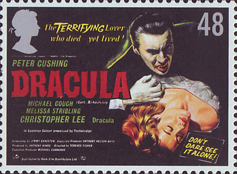
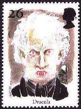
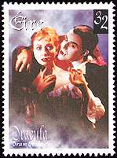
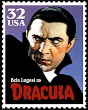
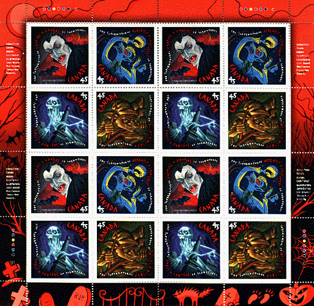
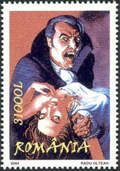
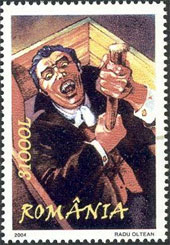
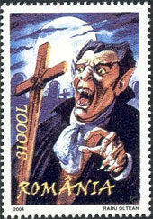
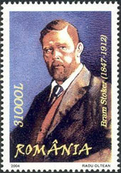

Dracula is a
famous character of the writer Bram Stocker (1847-1912), inspired by a Valachian
prince of the 15th century. Describing the archetype of a vampire, the Dracula
novel, published in 1897, was at the origin of
numerous movies, like F. Murnau's "Nosferatu the Vampire (1922), and of
those directed by T. Browning (1931) and T. Fisher (1958).
Dracula lived in a
castle situated in the middle of Carpathian mountains, in the region of Transilvania. Valachia and Transilvania are parts of Romania, and for this
reason the Romanian Postal Administration has issued on May 5, 1997 a set of
interesting stamps dedicated to Dracula and to his archetype, the Prince Vlad.
The mentioned set was issued as part of a general European postal action,
dedicated to "Stories and Legends".
The stamp of 400L
shows the portrait of the Prince Vlad and that of 4250L displays an image of the
terrific vampire (brrrr!). Both labels show the feared Dracula's castle, where
upon the legend the victims quenched the thirst of the vampire with their own
blood. Strange enough, the young and nice female victims weren't totally
innocent, because upon legend the vampire could begin the feast only when his
victims agreed to the moods of their preferred blood sucker.
The labels
display the text: Povesti si legende, meaning Stories and Legends. The whole set
was designed by the artist P. Comisarschi. The run was of 120,000 sets, that
were issued in sheets of 12 stamps and 8 labels. Please note the big difference
in face values of both stamps (practically an one to ten ratio).
 |
Please take
a look at the portrait of the Prince Vlad (known under the name Tepes
= the Impaler), the
son of a prince known under an even so nice name: Vlad Dracul (Vlad the Devil). Vlad Tepes
(1431-1476), pronounced as Tzepesh, has reigned during the years 1448, 1456-1462 and 1476. Even
if he wasn't a vampire, he was renowned for being extremely cruel.
Tepes and the powerful boyars (reach land owners)
permanently fought each other, and very often Tepes' the Impaler enemies finished their lives quite uncomfortably, on the top of
piles. The miniature sheet commemorates the 500th anniversary of the founding by the Prince Vlad of the city of Bucharest, the capital of Romania. The sheet was designed by Serban Zainea. The face value is of Lei 20, and the print run was of only 30'000 pieces. |
 |
The stamp above
on the left was issued by Royal Mail in 2008. It displays the original UK movie
advertisement.
A short personal story related
to the Romanian sheet. When the sheet appeared in 1959, I was a school boy in
Bucharest. I have started by collecting Romanian stamps just one year
earlier, and I was advised to begin with the newer stamps, because they
were usually less expensive. The Tepes sheet was freely available at face for several
years, but it was the most expensive all those issued after 1948 by the Romanian
postal administration. Its value represented about 2% of the salary of my
father, a school teacher.
For this reason I could only dream to put it into my collection. Later
I have changed my collecting interests, but nevertheless I have got it (see the
proof above)! This happened after 25 years, far away from Romania, when a friend
offered it to me as a gift. Of course, I could not refuse it. We all know that the patience is the highest quality of a stamp collector,
isn't it? So just wait enough, and if you are lucky the stamp of your dreams will be graciously
offered to you! :-)
 |
 |
More Draculas were issued in 1997, as part of the European postal plan
"Stories and Legend." The stamp on the left was issued by Great Britain (Scott 1754, SG
1980) and shows Dracula himself. The one next to it was issued by Ireland and
displays the vampire, approaching a nice victims (Scott 1087, SG 1141).
Does the victim look afraid? Not for sure; anyway she should be a bit more
attentive in the future (in the hope that she has a future yet). |
 |
A Canadian Dracula sheetlet that make us shiver

To finish "en beauté", please admire below the set released by the Romanian post on 21st May 2004. Please notice the high face values, due to the monetary inflation of those difficult years.
 |
 |
 |
 |
The stamp on the right displays the portrait of the writer Bram Stocker, the author of the Dracula novel.
| Created
01/012/01. Revised:
12/12/08. Copyright © 2001 - 2008 by Victor Manta, Switzerland. All rights reserved in all countries, |
|